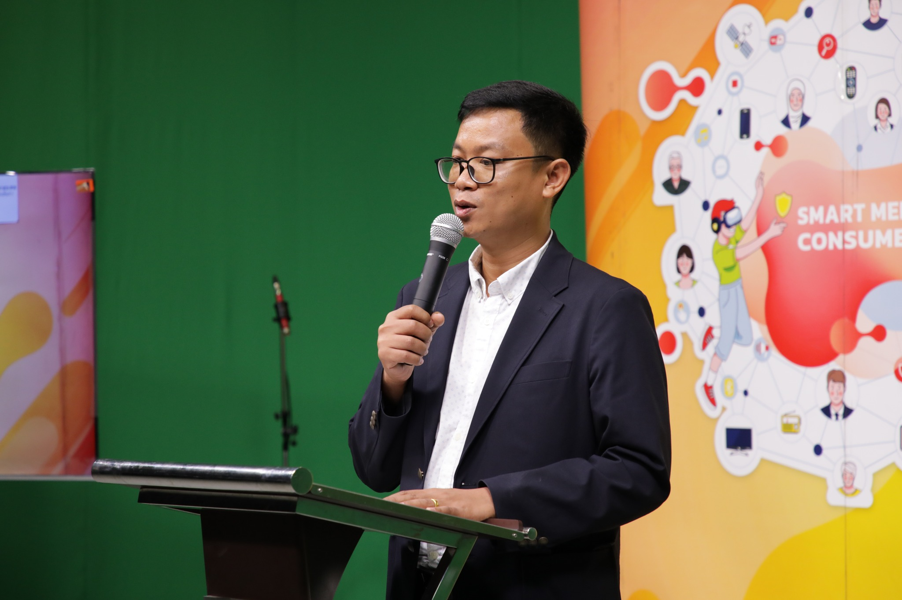

TOP Sarawut Kedtarwon
ศราวุฒิ เกิดถาวร
 topzaneverdie@gmail.com
topzaneverdie@gmail.com
1.ข้อมูลส่วนตัว
ศราวุฒิ เกิดถาวรวัน/เดือน/ปีเกิด 02/09/2530
ที่อยู่ปัจจุบัน 32/9 ตำบลในเมือง อำเภอเมือง จังหวัดชัยภูมิ รหัสไปรษณีย์ 36000
โทรศัพท์ 0985865881
ทำงานในตำแหน่ง อาจารย์ สาขาวิชาการสื่อสารดิจิทัลเเละมัลติมีเดีย
ที่ทำงาน/หน่วย คณะวิทยาการจัดการ มหาวิทยาลัยราชภัฏวไลยอลงกรณ์ ในพระบรมราชูปถัมภ์
เลขที่ 1 หมู่ 20 ถนน พหลโยธิน ตำบลคลองหนึ่ง อำเภอคลองหลวง จังหวัดปทุมธานี รหัสไปรษณีย์ 13180
โทรศัพท์ 0-2529-0674-7 โทรสาร 0-2529-2580
2.ข้อมูลการศึกษา
คุณวุฒิ
จบการศึกษาประถมศึกษา โรงเรียนบ้านเขว้า (อ.บ้านเขว้า จ.ชัยภูมิ)จบการศึกษามัธยมศึกษา ตอนต้น โรงเรียนชัยภูมภักดีชุมพล
จบการศึกษาประกาศณียบัตรวิชาชีพ(ปวช.) สาขา อิเล็กทรอนิกส์ วิทยาลัยเทคนิคชัยภูมิ
จบการศึกษาประกาศณียบัตรวิชาชีพขั้นสูง(ปวส.) สาขา อิเล็กทรอนิกส์อุตสาหกรรม วิทยาลัยเทคนิคชัยภูมิ
จบการศึกษาปริญญาตรี(2557) สาขาเทคโนโลยีอิเล็กทรอนิกส์และโทรคมนาคม คณะเทคโนโลยีอุตสาหกรรม มหาวิทยาลัยราชภัฏนครราชสีมา
จบการศึกษาปริญญาโท(2564) สาขาเทคโนโลยีสารสนเทศ คณะวิทยาการสารสนเทศ มหาวิทยาลัยมหาสารคาม
กำลังศึกษาปริญญาเอก สาขาคอมพิวเตอร์ศึกษา คณะครุศาสตร์อุตสาหกรรม มหาวิทยาลัยเทคโนโลยีพระจอมเกล้าพระนครเหนือ
3.ข้อมูลประสบการณ์/ความถนัด/ความสนใจพิเศษ
3.1 ประสบการณ์ในการทำงานที่ผ่านมา (ระบุตำแหน่งหน้าที่ หน่วยงาน ระยะเวลา ).3.1.1 อาจารย์ สาขาวิชาการสื่อสารดิจิทัลและมัลติมีเดีย คณะวิทยาการจัดการ มหาวิทยาลัยราชภัฏไลยอลงกรณ์ ในพระบรมราชูปถัมภ์ ระยะเวลา เริ่มงาน 1 มีนาคม 2565 ถึงปัจจุบัน
3.1.2 นักวิชาการโสตทัศนศึกษา สำนักวิทยบริการและเทคโนโลยีสารสนเทศ มหาวิทยาลัยราชภัฏชัยภูมิ ระยะเวลา 14 ปี 2552 ถึง 2565
3.2.ประสบการณ์ในด้านงานวิชาการ
3.2.1 ศราวุฒิ เกิดถาวร และ จารี ทองคำ (2022). การคัดเลือกคุณลักษณะความรู้สึกของคนไทยต่อโรคโควิด 19 บนสื่อสังคมออนไลน์ด้วยเหมืองข้อความ
3.2.2 ศราวุฒิ เกิดถาวร และ พรทิพย์ เกิดถาวร (2021). เว็บฝึกอบรมห้องสมุดเสมือนจริงเพื่อพัฒนาการรู้สารสนเทศ โดยใช้กรณีศึกษาเรื่องการใช้สารสนเทศในห้องสมุด มหาวิทยาลัยราชภัฏ
3.3. ความถนัด/สนใจเป็นพิเศษทางวิชาการ
การจัดการเรียนออนไลน์,
Datamining,
Artificial Intelligence (AI)
Machine Learning (ML)
Natural Language Processing (NLP) thainlp
Programming HTML(Bootstrap), PHP, MYSQL, Python
Wordpress
Cisco Config
4.ผลงานวิจัยที่ผ่านมา
TCI Tier 2
Sarawut Kedthawon (2024). A Systematic Literature Review Using Artificial Intelligence and Fake News Detection Interdisciplinary Academic and Research Journal
ศราวุฒิ เกิดถาวร, จรัญ แสนราช, พรทิพย์ เกิดถาวร (ยังไม่ผ่าน) การวิเคราะห์องค์ประกอบเชิงยืนยันของสมรรถนะของครูในการจัดการเรียนรู้รายวิชาวิทยาการคำนวณร่วมกับรูปแบบชุมชนแห่งการเรียนรู้ทางวิชาชีพ Journal of Research and Development Institute, Chaiyaphum Rajabhat University
ศราวุฒิ เกิดถาวร และ จารี ทองคำ (2022). การคัดเลือกคุณลักษณะความรู้สึกของคนไทยต่อโรคโควิด 19 บนสื่อสังคมออนไลน์ด้วยเหมืองข้อความ
วารสารวิทยาศาสตร์และเทคโนโลยี มหาวิทยาลัยอุบลราชธานี ปีที่ 24 ฉบับที่ 1 เดือนมกราคม-เมษายน 2565
ศราวุฒิ เกิดถาวร และ พรทิพย์ เกิดถาวร (2021). เว็บฝึกอบรมห้องสมุดเสมือนจริงเพื่อพัฒนาการรู้สารสนเทศ โดยใช้กรณีศึกษาเรื่องการใช้สารสนเทศในห้องสมุด มหาวิทยาลัยราชภัฏชัยภูมิ Journal of MCU Ubon Review,Vol.6 No.1(Jaunty-March2021)
Peer-reviewed Conference Proceedings
Sarawut Kedtarwon, Charun Sanrach (2023). Comparison of Data Classification Performance to Predict the Selection of Majors to Study for A Bachelor's Degree With Data Mining Techniques NCTechED15 & ICTechED10 June 8-9, 2023 KMUTNB Bangkok, Thailand
การพัฒนาบทเรียนผ่านเครือข่ายคอมพิวเตอร์วิชาการจัด การฐานข้อมูลทางการศึกษาสำหรับนักศึกษาระดับปริญญาตรีฯ
เว็บฝึกอบรมห้องสมุดเสมือนจริงเพื่อพัฒนาการรู้สารสนเทศ โดยใช้ กรณีศึกษาเรื่องการใช้สารสนเทศในห้องสมุด มหาวิทยาลัยราชภัฏชัยภูมิ
5.ผลงานวิจัยที่กำลังดำเนินการอยู่
การพัฒนาแผนกิจกรรมการเรียนรู้โดยใช้เทคนิคเกมมิฟิเคชัน ในรายวิชาการพัฒนาทักษะเทคโนโลยีดิจิทัลเพื่อผลิตสื่อมัลติมีเดีย ของผู้เรียนสาขาวิชาการสื่อสารดิจิทัลและมัลติมีเดีย คณะวิทยาการจัดการ มหาวิทยาลัยราชภัฏวไลยอลงกรณ์ ในพระบรมราชูปถัมภ์การจัดการเรียนรู้แบบผสมผสานในรายวิชาเทคโนโลยีสารสนเทศเพื่อชีวิตเพื่อเสริมสร้างสมรรถนะ ด้านการใช้เทคโนโลยีสารสนเทศและการสื่อสาร สำหรับนักศึกษาระดับปริญญาตรี
การพัฒนาเทคโนโลยีเสมือนจริงในแผ่นพับ การประชาสัมพันธ์สถานที่ท่องเที่ยวตำบลบางขะแยง อำเภอเมือง จังหวัดปทุมธานี